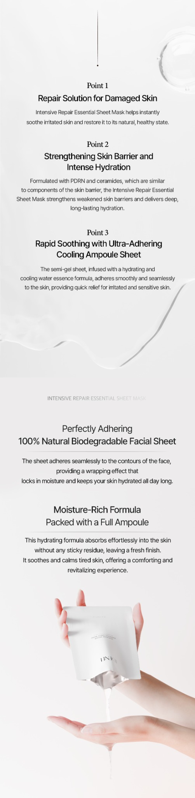
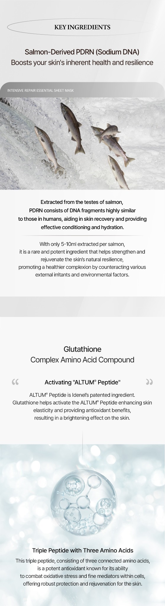
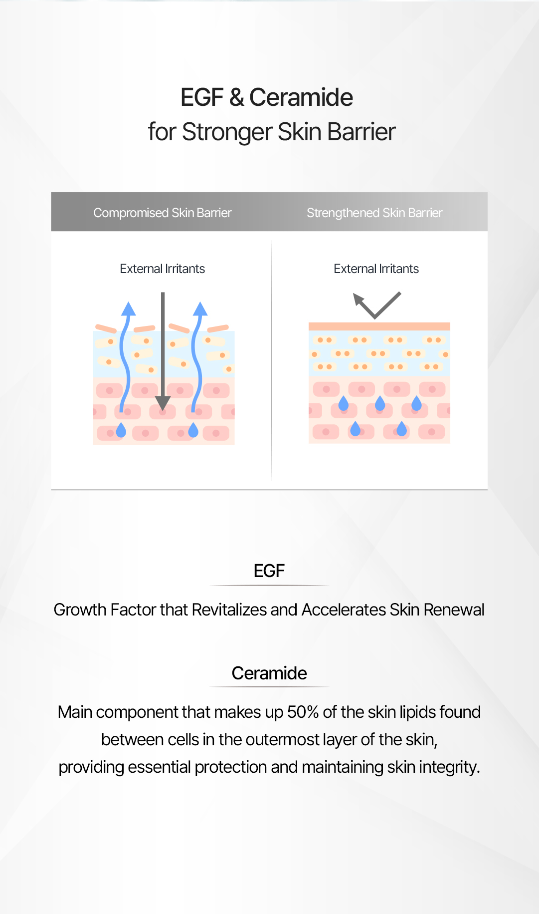
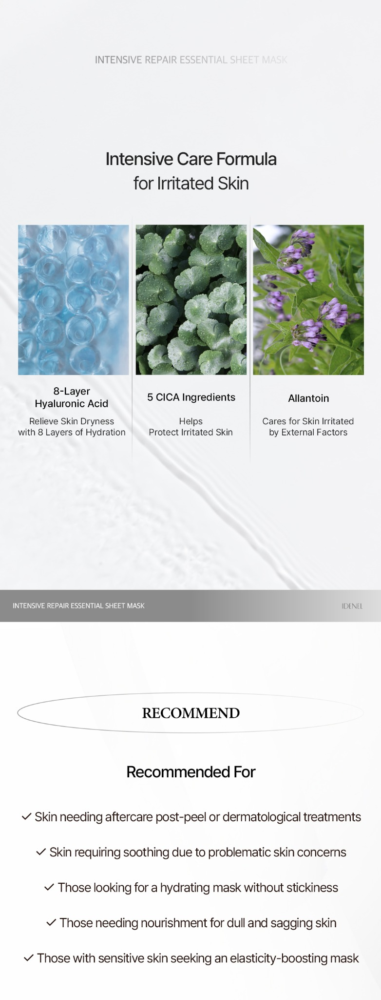
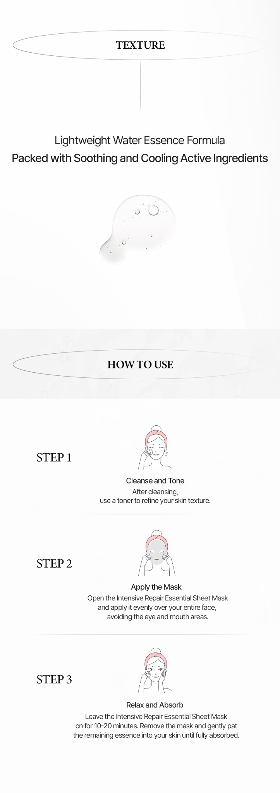
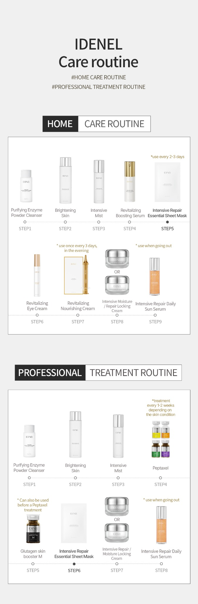
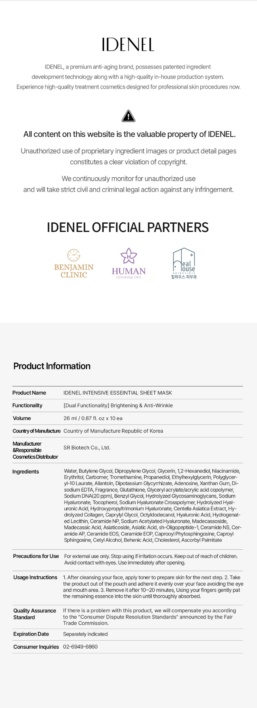

Intensive Repair Essential Sheet Mask
Mascarilla facial intensiva diseñada para hidratar, calmar y apoyar la recuperación cosmética de la piel cansada, sensible o expuesta a tratamientos estéticos.

Ultimate care in a single sheet
Una solución de cuidado intensivo para pieles que buscan hidratación profunda, efecto calmante y soporte de barrera cutánea.
Ayuda a restaurar la apariencia saludable y vital de la piel.
Apoya la barrera cutánea y entrega hidratación profunda para una piel más resistente.
Diseñada para piel cansada, sensible o expuesta a irritantes externos.


Fórmula intensiva para piel irritada
Ingrediente cosmético orientado al apoyo de la recuperación y resiliencia de la piel.
Antioxidante asociado a luminosidad y apoyo frente al estrés oxidativo.
Apoyo a la barrera cutánea, hidratación y cuidado de la integridad de la piel.


Piel que necesita cuidado calmante e hidratante


IDENEL Care Routine
Puede incorporarse dentro de una rutina de cuidado en casa o como complemento posterior a protocolos profesionales, según indicación del profesional tratante.

Ficha técnica resumida
Consulta disponibilidad en Chile
Escríbenos por WhatsApp para información comercial, precios, disponibilidad y venta profesional.